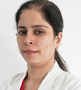

Dr Shelly Kapoor
QUALIFICATIONS
Consultant , MBBS, MD, 16 years of experience.
ABOUT DOCTOR
Dr Shelly Kapoor has a rich professional experience in the field of dermatology & venereology, in India.
She has completed her MBBS from the prestigious Government Medical College & Hospital, Amritsar. Following which she did her MD in dermatology & venereology from the renowned Government Medical College & Hospital, Patiala.
She has a number of publications nationally & internationally adding to her recognition.
She is an active participant in Dermatology related articles in various magazines & newspapers.
She is an active member of many prestigious medical associations.
Dr Kapoor’s special interest include Dermatosurgery.
SPECIALIZATION :
Dermatologist & Venerologist
Disease Dermatology
Cosmetic Dermatology
Dermatosurgery
WORK EXPERIENCE
Consultant, Medanta - The Medicity, Gurgaon
PAPER PUBLISHED
Paper presented at the 28th National Conference of IADVL, Bangalore
Paper presented at Joint Conference of Geriatric Society of India & II Annual Conference North Zone chapter of API, Patiala
Paper presented at 24th National Conference of IASSTI & AIDS & 11thregional meeting of IUASTI, PGI Chandigarh.
Paper presented at 29th National Conference of IADVL, Agra
Poster presented at 32nd National Conference of IADVL, Mumba
Paper presented at 32nd national Conference of IADVL, Mumbai
Paper presented at Biennial Conference of ACSI, Pune
Paper presented at 33rd National Conference of IADVL & 4th South Asian Regional Conference of Dermatology, Venereology & Leprology, Delhi